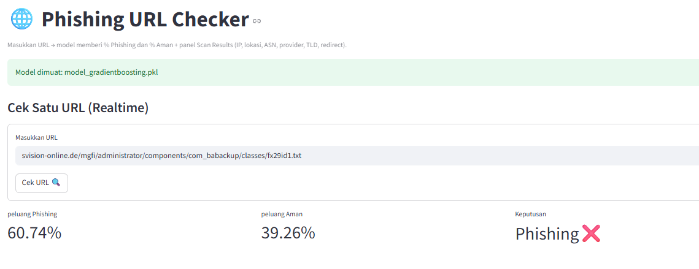
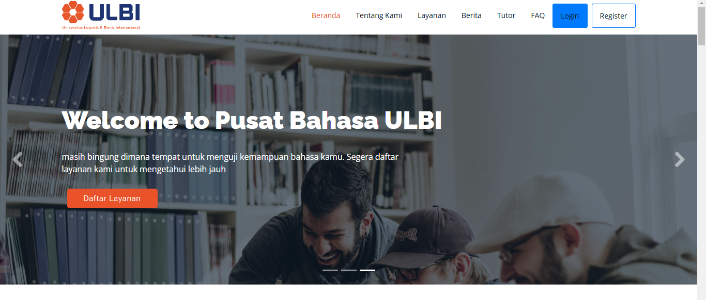
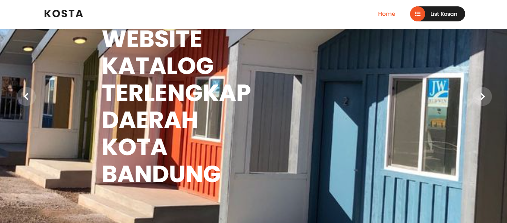
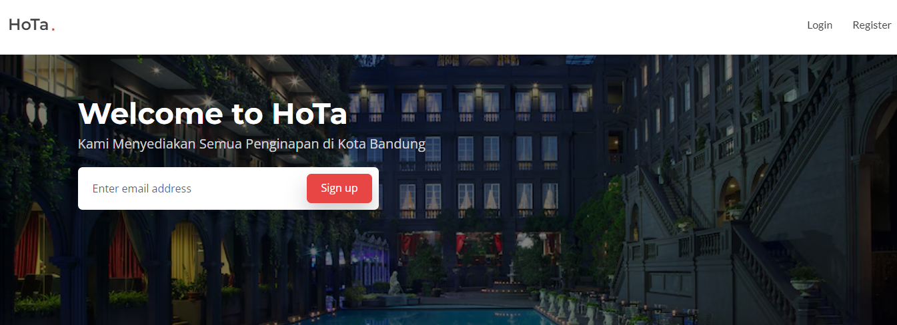
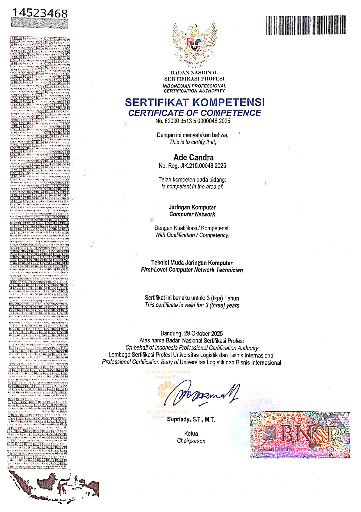
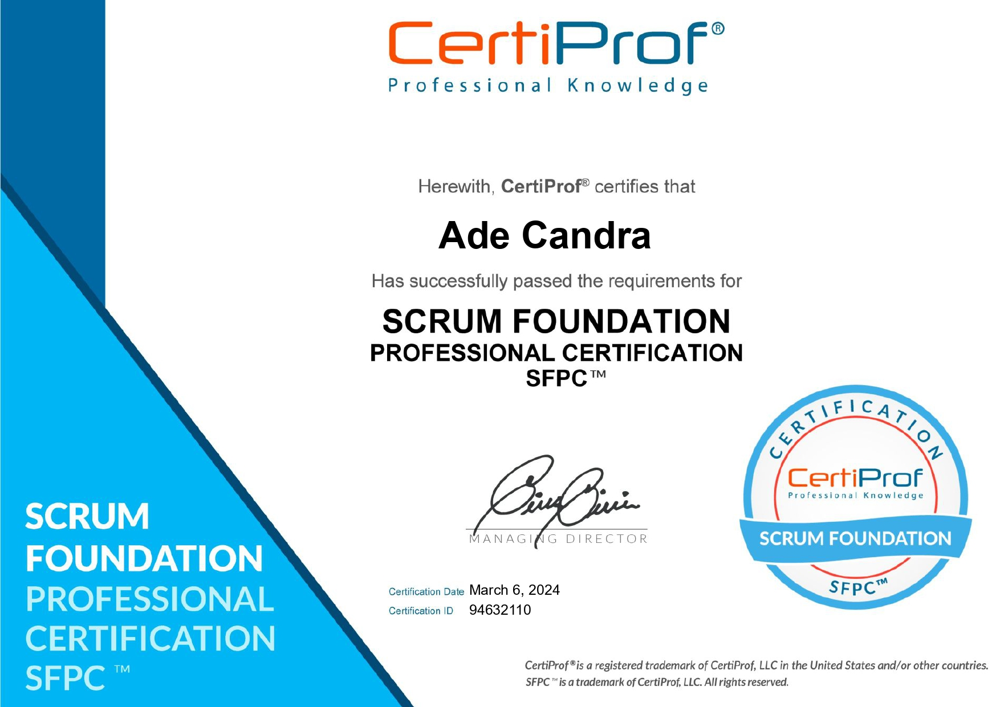
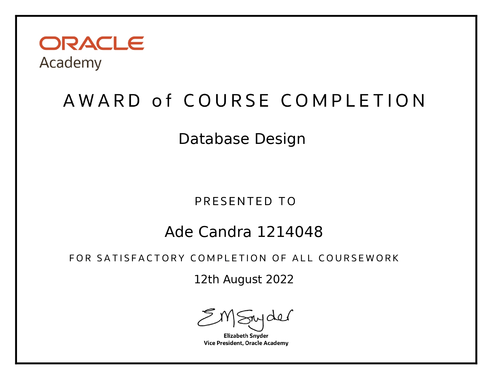
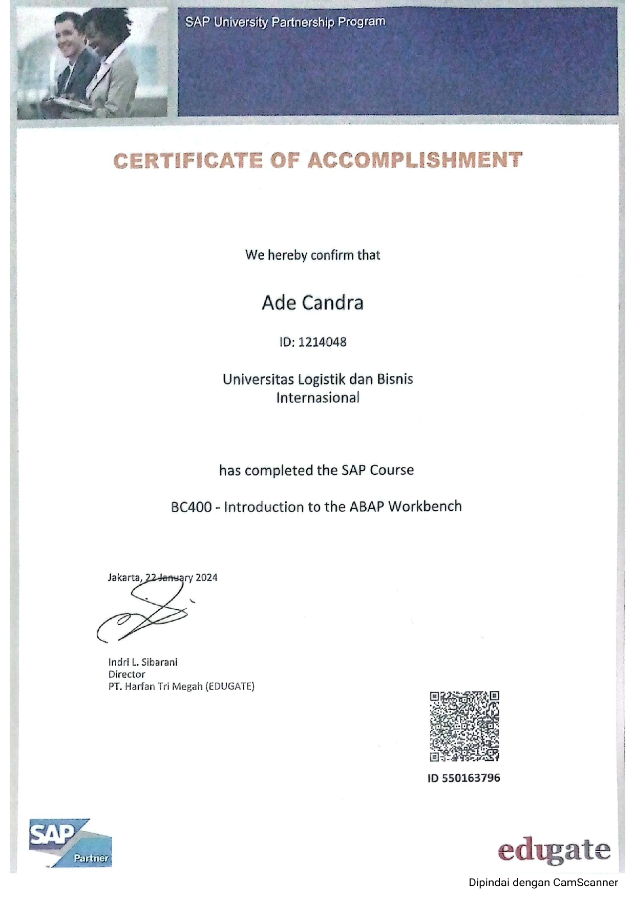
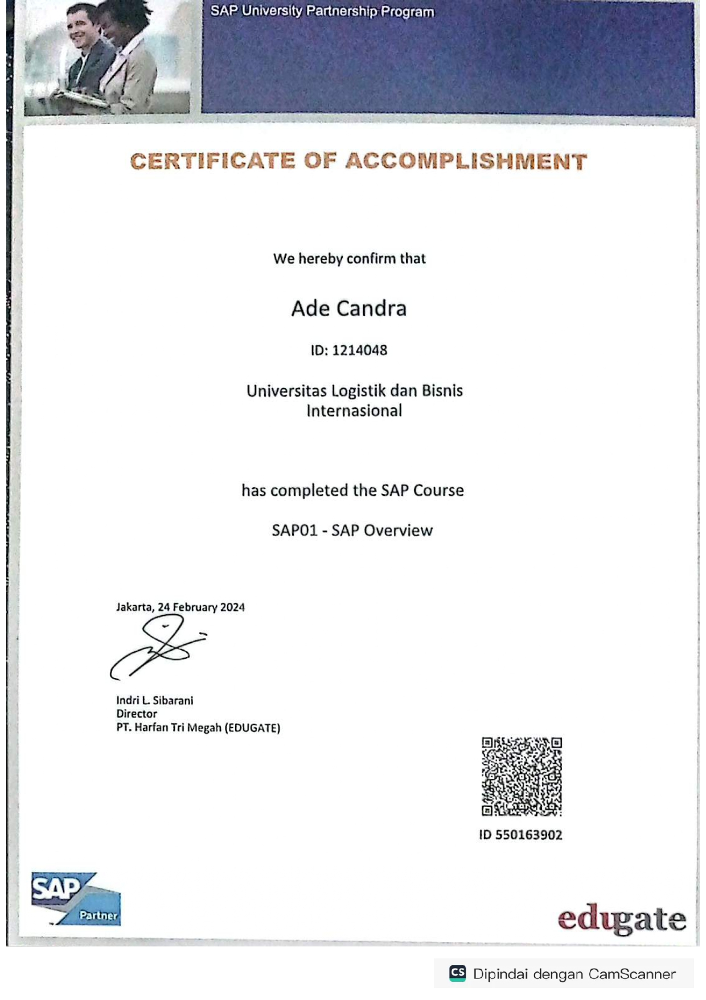

Web Development
Spesialisasi dalam membangun aplikasi web end-to-end menggunakan ekosistem Laravel (Laravel 9/11, Filament, Livewire). Mengimplementasikan autentikasi yang aman, manajemen manipulasi data, hingga integrasi API pihak ketiga.
Tersedia untuk Project
Seorang Full Stack Developer & Machine Learning Enthusiast. Berpengalaman membangun aplikasi web end-to-end yang cepat, bersih, dan fungsional.
4
Proyek Selesai
4
Sertifikasi Nasional/Intl
A+
Kompetensi Teknis
Fokus Keahlian
Spesialisasi dalam membangun aplikasi web end-to-end menggunakan ekosistem Laravel (Laravel 9/11, Filament, Livewire). Mengimplementasikan autentikasi yang aman, manajemen manipulasi data, hingga integrasi API pihak ketiga.
Pengembangan arsitektur kecerdasan buatan terfokus pada pemodelan prediktif dan analisis data. Berpengalaman melakukan proses preprocessing data serta menerapkan algoritma klasifikasi (seperti Gradient Boosting) menggunakan Python, Scikit-learn, dan Pandas.
Penanganan teknis mendalam mencakup pemecahan masalah sistem atau troubleshooting, konfigurasi perangkat jaringan, serta pemeliharaan infrastruktur komputer yang didukung oleh standarisasi kompetensi BNSP.
Portofolio Karya

Aplikasi pendeteksi website phishing berbasis kecerdasan buatan menggunakan algoritma Gradient Boosting Classifier. Mampu menganalisis URL secara realtime dengan akurasi mencapai 98,9%.

Sistem informasi pendaftaran dan pengelolaan peserta pelatihan serta sertifikasi untuk Pusat Bahasa Universitas Logistik dan Bisnis Internasional. Dibangun menggunakan arsitektur modern panel Filament dan Livewire.

Aplikasi katalog pencarian kos-kosan di wilayah Kota Bandung berbasis peta digital. Mengimplementasikan fitur pemetaan titik lokasi geografis terintegrasi untuk memudahkan calon penghuni melihat koordinat kos secara presisi.

Perancangan aplikasi web SIG yang berfungsi memetakan sebaran hotel. Sistem menggunakan marker khusus di atas peta interaktif untuk menandakan zonasi wilayah akomodasi hotel secara terstruktur.
Pendidikan
2021 — Saat Ini
Program Studi D4 Teknik Informatika
IPK: 3.36 / 4.00
2018 — 2021
Matematika dan Ilmu Pengetahuan Alam
Nilai: 85 / 100
Tentang Saya
Saya terbiasa bekerja secara kolaboratif dalam tim, menyelesaikan proyek mulai dari tahap analisis kebutuhan, perancangan sistem informasi geografis, pemodelan data, hingga tahap deployment ke server.
Fokus utama saya adalah terus mengembangkan kemampuan teknis guna memberikan solusi sistem digital yang efektif, terintegrasi, dan berkualitas tinggi.
Bahasa Pemrograman
Framework, Libraries & Tools
Kredensial Resmi

Sertifikasi kompetensi resmi dari Badan Nasional Sertifikasi Profesi (BNSP) untuk validasi keahlian infrastruktur jaringan skala menengah.

Validasi pemahaman internasional mengenai kerangka kerja Agile dan metodologi Scrum untuk manajemen pengembangan software yang adaptif.

Kredensial keahlian dalam merancang arsitektur basis data relasional yang efisien, pemodelan data (ERD), dan optimalisasi query terstruktur.

Sertifikasi pelatihan pemrograman tingkat lanjut menggunakan bahasa ABAP untuk kustomisasi dan pengembangan modul pada ekosistem SAP ERP.

Sertifikasi pelatihan pemrograman tingkat awal mengenai pengembangan modul pada ekosistem SAP ERP.
Hubungi Saya
Saya terbuka untuk peluang karir, proyek Full Stack Web Development, maupun implementasi Machine Learning. Pilih platform kenyamanan Anda untuk mulai berdiskusi!